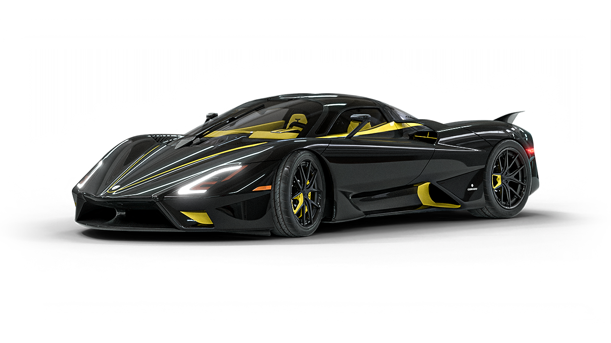
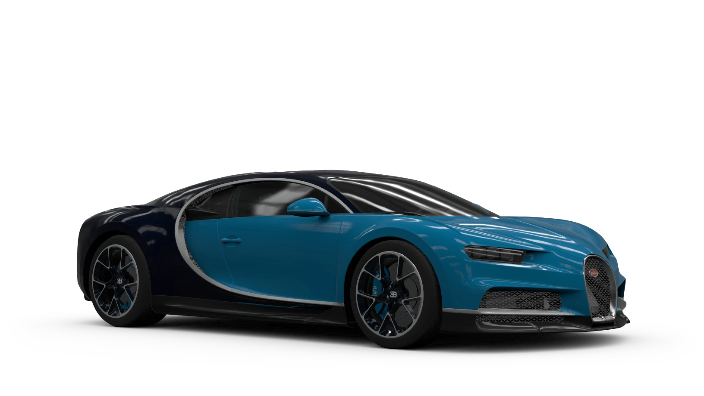

- SSC Tuatara(331mph)
- KOENIGSEGG JESKO ABSOLUTE (OVER 310mph)
- BUGATTI CHIRON SUPERSPORT 300+(304mph)
- Hennessey Venom F5(272mph)
- Rimac Nevera
- McLaren Speedtail(250mph)
- Koenigsegg Regera(250mph)
- Aston Martin Valkyrie(250mph)
- Pagani Huayra(238mph)
- Lamborghini Revuelto(217mph)
While the Bugatti Chiron’s complicated W16 engine is mightily impressive, sometimes you just can’t beat a whopping great V8 with a couple of turbos strapped to it. The SSC Tuatara (Too-ah-ta-ra) has a twin-turbocharged V8 which puts out up to 1,750hp when it’s running on ethanol, however there is some controversy around the official top speed.
You see, SSC claimed the Tuatara actually managed 331mph in October 2020 to make it the world’s fastest car — but later admitted to a GPS error that depicted that speed wrongly. Tests in early 2022 saw the car hit an actual top speed of 295mph, not exactly slow.
Koenigsegg is very good at making bonkers hypercars, and the Jesko Absolut is set to be the most insane offering yet. It uses a twin-turbocharged V8 engine which pushes 1,600hp when running on race fuel, and it’ll do 0-60mph in 2.5 seconds.

The Swedish brand also says that this car will do over 310mph, however this does come with a caveat. You see the Jesko Absolut has never actually hit this top speed in real life, these predictions are based on computer simulations, so time will tell if it can actually live up to these wild expectations.
.Those who grew up in the 2000s will probably associate the fastest car in the world with the legendary Bugatti Veyron. Well that car’s spirit has been carried over to the Bugatti Chiron Supersport 300+; an 8.0-litre, quad-turbocharged, 1,600hp mega machine which will do, as the name suggests, over 300mph.
Specifically, it did 304mph when the French firm unleashed it at Volkswagen’s Ehra-Lessien test track. The Chiron 300+ doesn’t hold the official world record though, as it only did the run in one direction. To break the record you have to do it twice in opposite directions, which Bugatti decided not to do for some reason. A replacement for the Chiron is imminent, so maybe that car will be even faster still.
.The folks in the USA are smashing the top speed game recently, with fourth place going to another all-American supercar. The Hennessey Venom F5 has a 6.6-litre twin-turbocharged V8 with 1,817hp and 1,617Nm of torque.

That’s enough to launch it from 0-60mph in 2.6 seconds, and it’ll go onto a top speed of 272mph – for now. Hennessey wants to get even more out of the F5, with the firm targeting a top speed of over 300mph in 2024
.Electric cars offer instant acceleration thanks to the torque from their electric motors, however the added weight of the batteries can limit them in terms of top speed. This isn’t the case for the Rimac Nevera though.
This ballistic EV hypercar has four electric motors, producing a whopping 1,914hp and 2,300Nm of torque. That’s enough to launch it from 0-60mph in just 1.9 seconds, and it can go on to a top speed of 256mph. It’s made almost entirely out of carbon fibre to keep the weight down, but this isn’t just some stripped-out drag racer. The interior is a lovely place to be and you still get all the luxuries you’d expect of a car that costs £2 million.
.McLaren didn’t design the Speedtail to chase world records, but, with a 250mph top speed, it’s the fastest road car it has ever built.